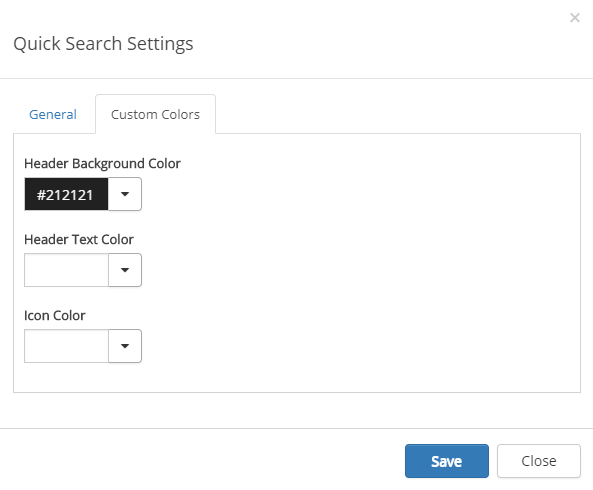

The Quick Search control makes it possible for the end user to search for content and people in the portal witout going to the Enteprise Search Center. The Quick Search control is shown across all SharePoint sites in Omnia.
The Quick Search settings are master page scoped. All sites using this master page will inherit the settings.
There are three different search scopes available for the end user:
The sorting of the search result is based on the default relevance ranking model in SharePoint.
To change the settings for the control, activate the Edit switch and click on the settings gear next to the control.
This will open the settings dialog.
On the General tab you can set the following (most of it normally used by programmers only):
You should primarily set colors through Theme colors in Omnia Admin (System/Settings/Default colors). If you still would like custom colors for the control, you can set them using this tab.
